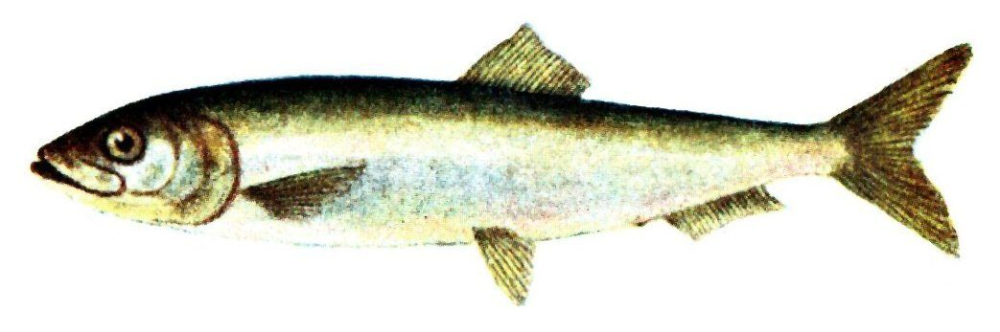

Biologia i rozpoznawanie
Wygląd i rozpoznawanie
Śledź to smukła, bocznie spłaszczona ryba o wrzecionowatym, opływowym kształcie, idealnie dostosowanym do życia w otwartej toni i nieustannego pływania w ławicy. Grzbiet ma stalowoniebieski lub zielonkawy, boki i brzuch lśniąco srebrzyste, niemal lustrzane — to efekt warstwy guaniny, która maskuje rybę w migotliwej wodzie. Ciało pokrywają duże, łatwo odpadające, cienkie łuski, a linia boczna jest słabo widoczna. Charakterystyczna jest pojedyncza, cofnięta płetwa grzbietowa, głęboko wcięta płetwa ogonowa oraz ostry, karpiowato zaznaczony brzuch z wyraźnym kilem z łusek. Forma bałtycka (Clupea harengus membras) jest wyraźnie mniejsza od śledzia oceanicznego — w Bałtyku typowe osobniki mierzą 15–25 cm, rzadko przekraczając 30 cm długości i 150–200 gramów masy. Duża, ruchliwa głowa z wielkim okiem i wysuwalnym, chwytnym pyskiem dopełnia sylwetki. Śledzia łatwo pomylić z pokrewnym szprotem, który jest jednak drobniejszy, ma bardziej wysunięty ku przodowi pysk i wyraźniejszy, kolczasty kil brzuszny sięgający dalej ku głowie. W dłoni śledź bywa śliski, a jego delikatne łuski odpadają przy najmniejszym dotknięciu, znacząc ubranie srebrzystym pyłem — to praktyczna cecha rozpoznawcza świeżo złowionej ryby prosto z ławicy.
Środowisko i występowanie w Polsce
Śledź bałtycki jest najliczniejszą i gospodarczo najważniejszą rybą polskich obszarów morskich. Zasiedla całe polskie wybrzeże Bałtyku — od Zatoki Pomorskiej i okolic Świnoujścia, przez otwarte wody środkowego wybrzeża, po Zatokę Gdańską i Zalew Wiślany. To ryba pelagiczna, spędzająca większość życia w otwartej toni, gdzie tworzy wielkie, przemieszczające się ławice reagujące jak jeden organizm. Sezonowo jednak zbliża się do brzegu: wiosną, w okresie tarła, gigantyczne stada podchodzą pod plaże, główki portów i falochrony we Władysławowie, Helu, Gdyni czy Kołobrzegu. Śledź toleruje niskie zasolenie Bałtyku, dlatego wnika także do słonawych zalewów i ujść rzek. Zimą wycofuje się w głębsze, cieplejsze i bardziej stabilne warstwy wody z dala od brzegu, gdzie ławice zimują przed kolejnym cyklem rozrodczym. Rozmieszczenie stad zmienia się więc w rytm pór roku i temperatury, a lokalne warunki — prądy, dopływ słodkiej wody z rzek, zakwity planktonu — decydują o tym, gdzie i kiedy śledź pojawi się najliczniej. Dla wędkarza brzegowego oznacza to, że łowisko śledziowe jest z natury sezonowe i ruchome, a jego trafienie wymaga śledzenia bieżących relacji z wybrzeża.
Biologia i tarło
Tarło śledzia bałtyckiego to jedno z najważniejszych zjawisk przyrodniczych naszego morza. W przeciwieństwie do wielu ryb śledź składa ikrę przyklejaną — samice wypuszczają dziesiątki tysięcy jajeczek, które przyklejają się do dna, kamieni, roślinności podwodnej i glonów na płytkich, przybrzeżnych łowiskach. W Bałtyku wyróżnia się populacje tarlaków wiosennych, podchodzących pod brzeg od marca do maja, oraz mniej liczne stada tarła jesiennego. Właśnie te wiosenne podejścia rozrodcze ściągają pod porty ławice tak gęste, że woda potrafi się od nich srebrzyć. Larwy po wykluciu unoszą się w toni, odżywiając się planktonem, a dojrzałość płciową ryby osiągają zwykle w drugim–trzecim roku życia. Śledź dożywa kilkunastu lat, choć w intensywnie eksploatowanym stadzie starszych, dużych osobników spotyka się coraz rzadziej niż dawniej. Sukces tarła zależy w dużej mierze od stanu przybrzeżnych łąk podwodnych i czystości płytkich zatok, do których podchodzą tarlaki — degradacja tych siedlisk i wahania warunków środowiskowych bezpośrednio przekładają się na liczebność kolejnych pokoleń, dlatego kondycja stada śledzia jest uważnie monitorowana przez naukowców jako jeden z ważnych wskaźników zdrowia całego Bałtyku.
Żerowanie w sezonach
Śledź jest planktonożercą — podstawą jego diety są drobne skorupiaki planktonowe, widłonogi, larwy i jaja innych organizmów, a większe osobniki chwytają też narybek i drobne bezkręgowce. Żeruje głównie w toni wodnej, filtrując i wychwytując zdobycz, dlatego jego aktywność ściśle zależy od zagęszczenia planktonu, temperatury i pory dnia. Wiosną, w okresie podejść tarłowych pod brzeg, ławice bywają najintensywniej dostępne dla wędkarzy — ryby są skupione, ruchliwe i reagują na migotliwe, drobne przynęty imitujące zooplankton. Latem stada rozpraszają się w głębszej, chłodniejszej wodzie i schodzą dalej od plaż. Aktywność żerowa nasila się o świcie i o zmierzchu, gdy plankton migruje pionowo ku powierzchni, a wraz z nim podnoszą się ławice śledzia, co wielokrotnie decyduje o powodzeniu na łowisku portowym. Warto pamiętać, że śledź nie żeruje agresywnie jak drapieżnik — nie atakuje dużej zdobyczy, lecz „nadziewa się" na drobne, migotliwe elementy przypominające plankton, dlatego skuteczność zależy nie tyle od aktywności pojedynczej ryby, ile od tego, czy uda się utrzymać przynętę w gęstej, żerującej ławicy. Gdy stado przechodzi, brania potrafią być błyskawiczne i seryjne, po czym urywają się równie nagle.
Przepisy, metody i taktyka
Przepisy krajowe i zasady lokalne
Przepisy krajowe: Wody morskie: sprawdź aktualne zasady, limity i komunikaty GIRM przed połowem. Źródło: aktualne informacje GIRM
Przed połowem: sprawdź aktualny regulamin i zezwolenie dla konkretnej wody. Wymiar, okres, limit lub zakaz lokalny może być ostrzejszy; brak wartości krajowej nie oznacza zgody na zabranie ryby.
Metody i przynęty
Klasyczną i najskuteczniejszą metodą na śledzia jest łowienie na tak zwaną „choinkę" — gotowy zestaw kilku małych haczyków rozmieszczonych na krótkich przyponach wzdłuż linki głównej, ozdobionych błyszczącymi paciorkami, kawałkami folii, świecącej rurki lub drobnymi piórkami. Te migotliwe elementy imitują zooplankton i drobny narybek, na który śledź żeruje w ławicy. Na końcu zestawu montuje się ciężarek dostosowany do głębokości i prądu, pozwalający sięgnąć warstwy, w której stoi stado. Choinkę prowadzi się delikatnymi, rytmicznymi szarpnięciami, aby paciorki i piórka „ożywały" w wodzie. Wędka morska lub uniwersalny spining o odpowiednim wybłysku, kołowrotek z pojemną szpulą i mocniejsza plecionka to typowy komplet. Gdy ławica jest gęsta, na jednym zaciągu potrafi zaciąć się kilka śledzi naraz. Dobierając choinkę, zwróć uwagę na rozmiar haczyków i drobno dobrany, migotliwy materiał — do niewielkiego śledzia bałtyckiego pasują zestawy delikatniejsze niż te sprzedawane na większe ryby morskie. Kolor paciorków i piórek bywa istotny: w pogodne dni sprawdzają się barwy srebrzyste i przezroczyste, przy zachmurzeniu i o zmierzchu — jaskrawe, świecące lub fluorescencyjne elementy, które łatwiej wypatrzyć w mętniejszej toni.
Taktyka łowienia
Kluczem do udanego połowu śledzia jest trafienie w moment i miejsce podejścia ławicy pod brzeg. Wiosną, od marca do maja, warto obserwować główki portów, falochrony i pomosty we Władysławowie, na Helu, w Gdyni i Kołobrzegu — ryby często pojawiają się falami, więc obecność innych wędkarzy z uginającymi się wędkami to najlepszy znak. Najlepsze brania przypadają zwykle o świcie i o zmierzchu, gdy plankton, a za nim śledź, podnosi się w toni. Zaczynaj od przeszukiwania różnych głębokości: opuść choinkę, policz sekundy opadania i zmieniaj warstwę, aż znajdziesz stado. Gdy ławica stoi, utrzymuj przynętę w jej poziomie i prowadź zestaw drobnymi szarpnięciami. Warto mieć zapasowe choinki, bo ostre falochrony i kolce śledzi łatwo niszczą delikatne przypony podczas gorących serii. Przydaje się też wiaderko lub torba do przechowania złowionych ryb w chłodzie oraz szmatka do rąk, bo śledź obficie brudzi luźnymi łuskami. Miej na uwadze pogodę i stan morza — silny wiatr od strony lądu i wysoka fala potrafią odepchnąć ławice od brzegu i uczynić stanie na falochronie po prostu niebezpiecznym, dlatego przy wzburzonym morzu lepiej odpuścić łowisko i wrócić przy spokojniejszej wodzie.
Wartość kulinarna
Śledź od wieków należy do najważniejszych ryb kuchni polskiej i całego regionu bałtyckiego — to on, obok dorsza, budował gospodarkę nadmorskich miast i portów rybackich. Jego tłuste, aromatyczne mięso jest niezwykle wszechstronne: śledzie soli się, marynuje, wędzi i smaży, a w tradycji świątecznej i wigilijnej stanowią wręcz obowiązkowy element stołu. Klasyki to śledź w oleju z cebulą, w śmietanie, po kaszubsku w zalewie słodko-kwaśnej czy koreańsku z warzywami. Świeżo złowione, drobne śledzie bałtyckie znakomicie smakują usmażone na chrupko w mące, tuż po wyjęciu z wody. Mięso śledzia jest bogate w zdrowe kwasy tłuszczowe omega-3, białko i witaminę D, dlatego uchodzi za jedną z najzdrowszych ryb w naszej diecie. Trzeba jednak pamiętać, że jest dość ościsty, dlatego przy filetowaniu warto poświęcić chwilę na dokładne usunięcie drobnych ości lub wybrać przepisy, w których kwaśna marynata je zmiękcza. Ze względu na tłustość i delikatność mięsa śledź szybko traci świeżość, więc po połowie najlepiej jak najszybciej go schłodzić i przetworzyć jeszcze tego samego dnia.
Ciekawostki
Śledź to jedna z ryb, które w największym stopniu ukształtowały historię gospodarczą Europy Północnej — handel soloną „śledziówką" był fundamentem potęgi Ligi Hanzeatyckiej, a szlaki śledziowe decydowały o losach miast i państw. Bałtycka forma śledzia, nazywana po prostu śledziem bałtyckim, jest mniejsza od swojego oceanicznego kuzyna, co wiąże się z niższym zasoleniem i chłodem naszego morza. Śledzie potrafią tworzyć ławice liczące miliony osobników, które poruszają się z zadziwiającą synchronizacją, reagując na drapieżnika jak jeden organizm. To także jedno z kluczowych ogniw bałtyckiej sieci pokarmowej — śledziem żywią się dorsze, łososie, troć, ptaki morskie i foki, dlatego kondycja jego stada wpływa na całe morze. Ciekawostką jest też sposób komunikacji śledzi: ryby te potrafią wydawać dźwięki przez wypuszczanie pęcherzyków gazu, co prawdopodobnie pomaga utrzymać spójność ławicy po zmroku. Wielkość bałtyckiej formy zmienia się ponadto w zależności od rejonu morza — im niższe zasolenie i chłodniejsza woda ku wschodowi, tym śledzie bywają drobniejsze, co od dawna intryguje ichtiologów badających nasze morze.
FAQ — najczęstsze pytania
Kiedy najlepiej łowić śledzia z brzegu?
Najlepszy czas to wiosenne podejścia tarłowe, zwykle od marca do maja, gdy ogromne ławice śledzia podchodzą pod plaże, główki portów i falochrony. To wtedy ryba jest skupiona, żeruje intensywnie i jest realnie dostępna z brzegu bez łodzi. W ciągu doby brania koncentrują się najczęściej o świcie i o zmierzchu, gdy plankton migruje ku powierzchni. Warto śledzić lokalne relacje z Władysławowa, Helu, Gdyni czy Kołobrzegu, bo podejścia bywają falowe i potrafią pojawić się nagle. Latem ławice rozpraszają się w chłodniejszej, głębszej wodzie z dala od brzegu i połów staje się znacznie trudniejszy.
Co to jest łowienie na „choinkę"?
„Choinka" to popularna nazwa gotowego zestawu do łowienia śledzi i innych ryb ławicowych. Składa się z kilku małych haczyków osadzonych na krótkich przyponach wzdłuż linki głównej, ozdobionych błyszczącymi paciorkami, kawałkami folii, świecącej rurki lub drobnymi piórkami. Te elementy imitują zooplankton i drobny narybek, na który śledź żeruje. Na dole zestawu mocuje się ciężarek pozwalający sięgnąć warstwy, w której stoi stado. Choinkę prowadzi się rytmicznymi, delikatnymi szarpnięciami, aby przynęty „ożywały" w wodzie. Gdy trafi się w gęstą ławicę, na jednym wyciągu potrafi zaciąć się kilka śledzi jednocześnie, co czyni tę metodę bardzo widowiskową.
Gdzie nad polskim morzem szukać śledzia?
Sztandarowe łowiska śledziowe z brzegu to główki i falochrony dużych portów: Władysławowo, Hel, Gdynia oraz Kołobrzeg, a także wiele mniejszych pomostów i główek wzdłuż wybrzeża. Śledź podchodzi tam wiosną, w okresie tarła, wykorzystując płytkie, przybrzeżne strefy do składania przyklejanej ikry. Dobrym tropem jest obserwacja innych wędkarzy — ławice bywają skupione punktowo, więc miejsce, gdzie kilka osób jednocześnie wyciąga ryby, to sygnał, że stado właśnie podeszło. Pamiętaj jednak, że część falochronów i terenów portowych bywa objęta zakazem wstępu ze względów bezpieczeństwa, dlatego zawsze wybieraj miejsca legalne i dostępne dla wędkarzy oraz zachowaj ostrożność na śliskich, kamiennych umocnieniach.
Czy na śledzia potrzebne jest zezwolenie PZW?
Nie — śledź to ryba morska, a jego połów nie jest regulowany zezwoleniami i regulaminem PZW obowiązującymi na wodach śródlądowych. Obowiązują tu odrębne przepisy o rybołówstwie morskim oraz zasady rekreacyjnego połowu na obszarach morskich Rzeczypospolitej. Regulacje te dotyczą dozwolonych metod, ewentualnych limitów oraz miejsc połowu i bywają aktualizowane, dlatego przed wyjściem na łowisko warto sprawdzić obowiązujące przepisy oraz komunikaty właściwego urzędu morskiego. Niezależnie od zasad rybackich respektuj oznakowania i zakazy wstępu na falochrony oraz tereny portowe. Ten materiał ma charakter przeglądowy i nie zastępuje aktualnych przepisów — zawsze weryfikuj obowiązujący stan prawny przed połowem.
Źródła i weryfikacja
Materiał ma charakter przeglądowy i edukacyjny. Śledź to ryba morska — jego połów podlega przepisom o rybołówstwie morskim i zasadom rekreacyjnego połowu na obszarach morskich RP, a nie regulaminowi PZW. Nie podajemy tu precyzyjnych limitów ani wymiarów, ponieważ regulacje morskie bywają aktualizowane — przed połowem zweryfikuj aktualne przepisy o rybołówstwie morskim, komunikaty właściwego urzędu morskiego oraz ewentualne lokalne ograniczenia w rejonie portów i falochronów. Zobacz też: wędkarstwo morskie — techniki połowu w Bałtyku.
Tożsamość biologiczna i źródła
Nazwa łacińska: Clupea harengus. Grupa atlasu: morskie. Alias: śledź atlantycki.
Źródła: FishBase: Clupea harengusGBIF: Clupea harengusIUCN Red List: Clupea harengus. Dostęp: 2026-07-17. Zakres: tożsamość taksonomiczna i nazewnictwo oraz, gdy wskazano, ocena ochrony; bez potwierdzenia lokalnego występowania, stanu łowiska ani zasad połowu.
Porównanie taksonomiczne
Porównaj z kartą Belona. Obie karty prowadzą do osobnych rekordów źródłowych; porównanie nie jest kluczem oznaczania w terenie ani gwarancją wyniku połowu.